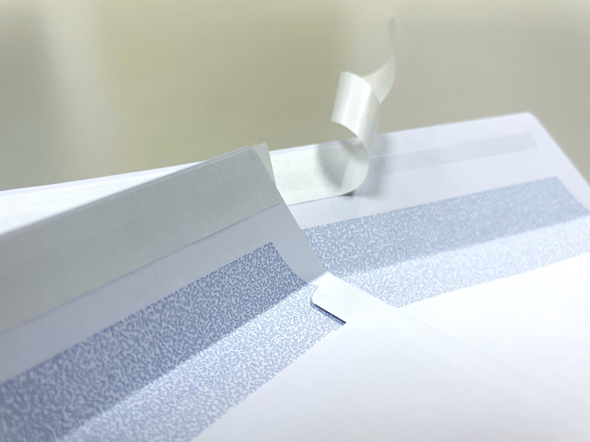
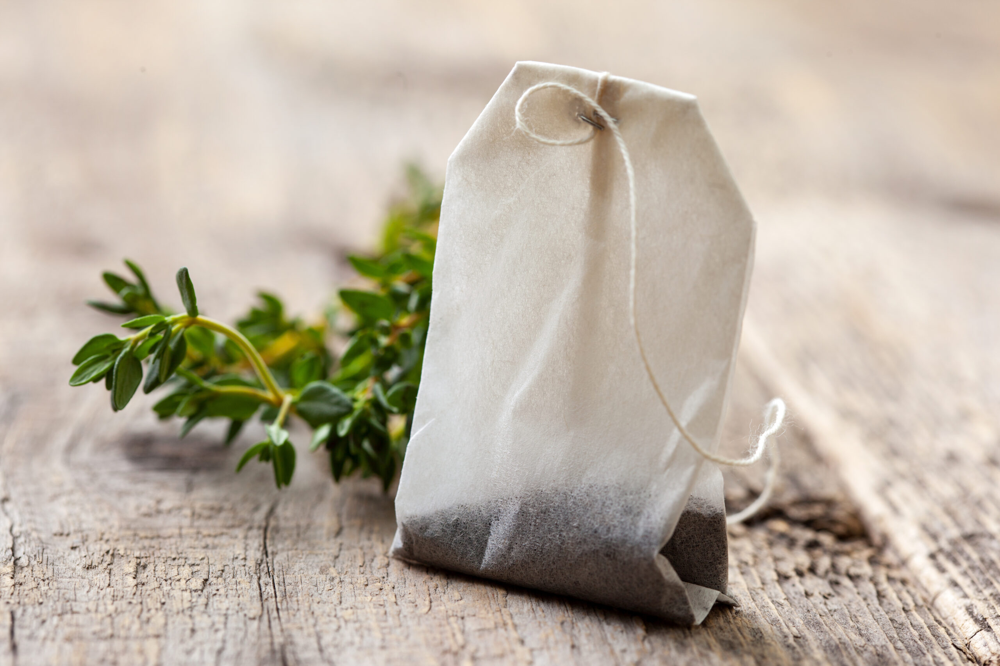
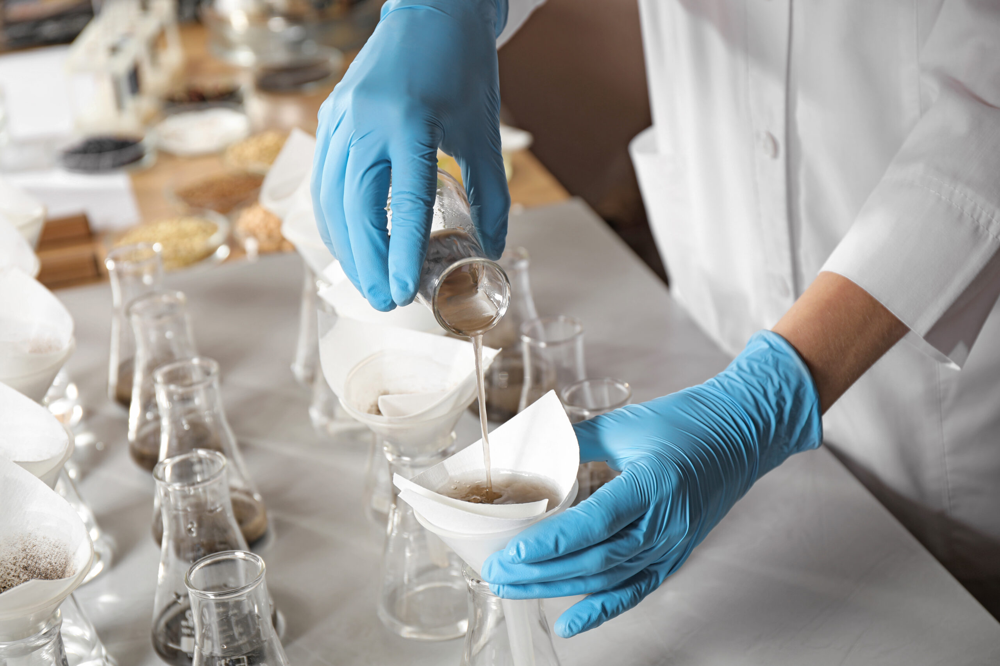
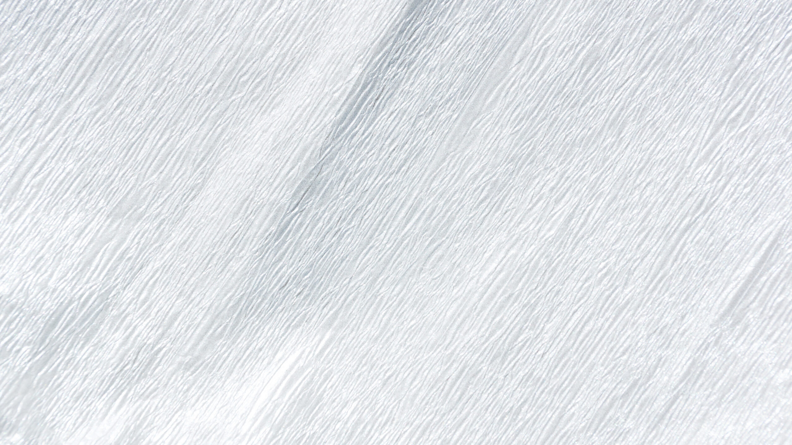

Produktbereich
Im Produktebereich Spezialitäten fassen wir unsere Premium-Produkte zusammen, die mit aussergewöhnlichen Fasern oder Beschichtungen eingesetzt werden.

Für die Herstellung von Briefumschlägen und Versandtaschen, Boxen und den Hygienebereich liefern wir einseitig silikonisierte Papiere in verschiedenen Ausrüstungen in Rollen oder Schmalrollen, auch mit einseitigem Flexodruck.
Ob für Automotive, Bau, Laminierung oder Klebeband-Anwendungen – sprechen wir darüber!

Die Schweizer Abpacker von Tee und Café betreut CARTONAL im Auftrag von MAGNERA, dem globalen Marktführer für Langfaserpapieren für die Lebensmittelfiltration. Das Papier wird an drei europäischen Standorten hergestellt, wichtigstes Basismaterial sind die natürlichen Fasern der Abaca-Pflanze. Auf Anfrage offerieren wir auch Dreisiegelrandbeutel oder Korbkaffeefilter.

Filtration und Absorption in Labor, Messtechnik und Industrie – Papieren und Kartons für die Filtration und Absorption von Flüssigkeiten ist ein kleiner Markt mit einer sehr anspruchsvollen Kundschaft. Wir unterscheiden verschiedene Anwendungen:
Das Angebot ist so vielfältig wie die möglichen Anwendungen. Informieren Sie uns über Ihre Bedürfnisse, gerne möchten wir auch Ihnen das richtige Produkt vorstellen und liefern.

Krepp-Papier – wird als Unterlage in der Back-Industrie, als Verpackungsmaterial oder auch für medizinische Anwendungen eingesetzt. Die Stärke der Kreppung passen wir auf Ihre Anforderungen an.
Dürfen wir Sie bei Ihrem Projekt unterstützen?
Kontaktieren Sie uns!